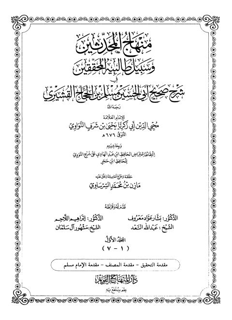

مازن السرساوي
Author
Resources

منهاج المحدثين وسبيل طالبيه المحققين في شرح صحيح أبي الحسن مسلم بن الحجاج القشيري منهاج المحدثين وسبيل طالبيه المحققين في شرح صحيح أبي الحسن مسلم بن الحجاج القشيري يحيى بن شرف النووي منهاج المحدثين وسبيل طالبيه المحققين في شرح صحيح أبي الحسن مسلم بن الحجاج القشيري- مدمجة
منهاج المحدثين وسبيل طالبيه المحققين في شرح صحيح أبي الحسن مسلم بن الحجاج القشيري- مدمجة
محيي الدين يحيى بن شرف النووي
منهاج المحدثين وسبيل طالبيه المحققين في شرح صحيح أبي الحسن مسلم بن الحجاج القشيري- مدمجة
منهاج المحدثين وسبيل طالبيه المحققين في شرح صحيح أبي الحسن مسلم بن الحجاج القشيري- مدمجة
محيي الدين يحيى بن شرف النووي